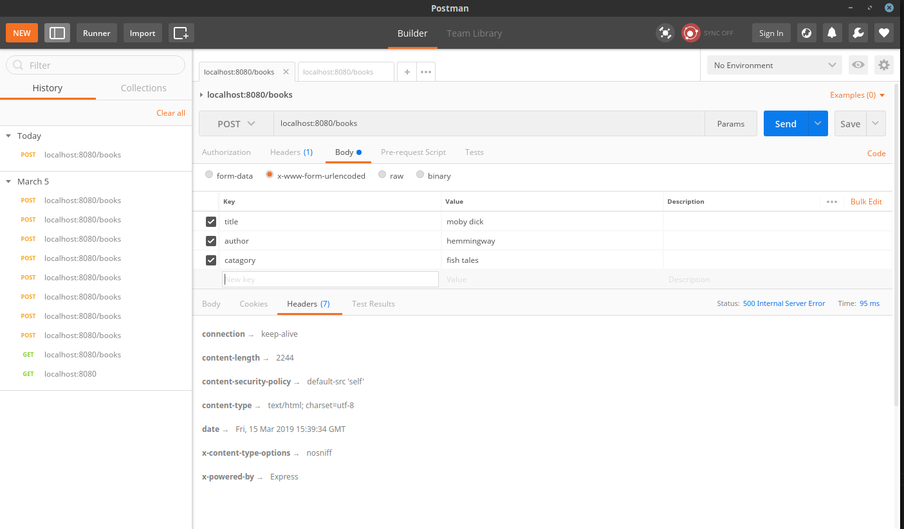
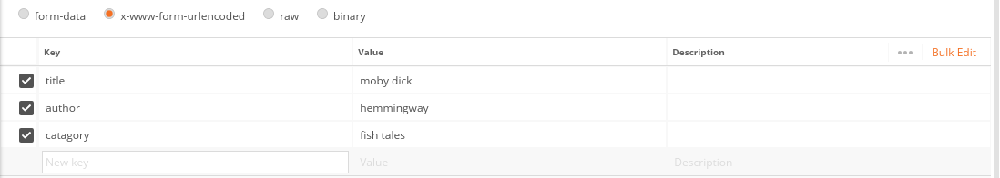

Postman Example/Explained
Postman is an application that allows you to simulate get and post requests.
This is an example of Postman, which allows us to communicate in different ways.
In this, we are receiving data from postman about our requests.
You can modify the attributes and then click "send" to see the changes.